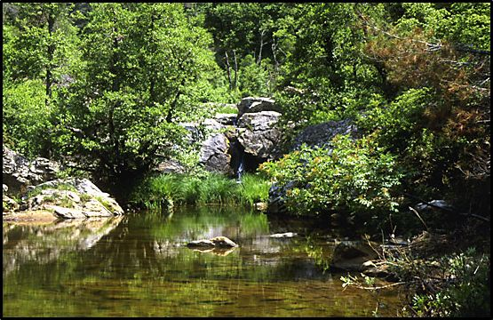
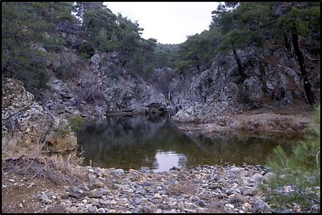

Με βάση τις ενδείξεις των μετεωρολογικών σταθμών της περιοχής, το κλίμα στην περιοχή Δαδιάς κατατάσσεται στον ύφυγρο βιοκλιματικό όροφο με ψυχρό χειμώνα. Η μέγιστη ηλιοφάνεια καταγράφεται τους μήνες Ιούλιο - Αύγουστο και η ελάχιστη τους μήνες Δεκέμβριο - Φεβρουάριο. Η μέση ετήσια νέφωση για το σταθμό του Σουφλίου καταγράφηκε σε 4,24 όγδοα. Στην περιοχή το ετήσιο ύψος βροχής κυμαίνεται από 709 μέχρι 916 mm. Για το Σουφλί ο μέσος ετήσιος αριθμός ημερών βροχής είναι 78,9 ημέρες, ο μέσος ετήσιος αριθμός ημερών δροσιάς 88 ημέρες και ο μέσος ετήσιος αριθμός ημερών χαλάζης 1,2 ημέρες.
Τα εδάφη χαρακτηρίζονται αβαθή μέχρι μέτρια βαθιά, καλά αεριζόμενα, με καλή διαπερατότητα και μικρή μέχρι μέτρια γονιμότητα. Τα βαθύτερα και γονιμότερα εδάφη παρουσιάζονται κυρίως πάνω σε μεταμορφωμένα και ιζηματογενή πετρώματα. Η βιολογική δραστηριότητα των εδαφών είναι μικρή.
Οι πετρογραφικές διαπλάσεις της περιοχής είναι κυρίως σχηματισμοί της Τριτογενούς γεωλογικής περιόδου. Στην περιοχή εμφανίζονται μεταμορφωμένα πετρώματα, κυρίως γνεύσιοι και μαρμαρυγιακοί σχιστόλιθοι, βασικά πυριγενή πετρώματα (περιοδίτες - σερπεντίνες), όξινα πυριγενή (ηφαιστειακά) και ιζηματογενή πετρώματα (άμμοι, άργιλοι, κροκαλοπαγή).
Η περιοχή αποτελείται από τρεις σαφείς υδρολογικές λεκάνες και τμήματα δύο άλλων λεκανών. Ο βαθμός χειμαρικότητας αυτών των λεκανών είναι ασήμαντος (01). Οι μέγιστες παροχές των κεντρικών ρεμάτων με συχνότητα 20 χρόνια κυμαίνονται ανάλογα με τα ρέματα από 143 m3 / sec μέχρι 338 m3 / sec. Στην περιοχή υπάρχουν πολλά υπόγεια νερά, όπως φαίνεται και από την παρουσία πολλών πηγών. Η εμφάνιση των υπογείων νερών σε ηφαιστειογενή και περιδοτικά πετρώματα, οφείλεται κύρια στην παρουσία ρηξιγενών επιφανειών σε μικρό βάθος από την επιφάνεια του εδάφους.
